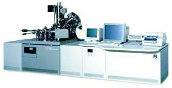

Auger
Emission Spectroscopy (AES)
Auger
Emission Spectroscopy (AES), or Auger Analysis, is a failure analysis technique used in
the identification of elements present on the surface of the sample.
Like EDX and WDX analysis, AES involves the bombardment of the sample with
an energetic primary beam of electrons. This process generates,
among other things, a certain class of electrons known as Auger electrons.
The
mechanism by which an Auger electron is released starts with an electron
being ejected by the primary electron beam from its shell, say, the
K-shell. Another electron from an outer shell (say, the L1-level) of the same atom emits energy in
the form of a photon in order to go down to the K-shell position vacated
by the ejected electron. The photon released by the second electron
will either get lost or eject yet another electron from a different level,
say, L2. Auger electrons are electrons ejected in this manner, such
as the third electron from L2 in the example.
Thus,
the generation of an Auger electron requires at least three electrons,
which in the example above are the K, L1, and L2 electrons. In this
example, the emitted Auger electron is referred to as a KLL Auger
electron. Hydrogen and Helium atoms have less than three electrons,
and are therefore undetectable by AES.
|
 |
|
Figure 1.
Example of an Auger
Analysis Equipment from JEOL |
The
energy content of the emitted Auger electron is unique to the atom where
it came from. Thus, AES works by quantifying the energy content of
each of the Auger electrons collected and matching it with the right
element.
The
energy of Auger electrons is usually between 20 and 2000 eV. The
depths from which Auger electrons are able to escape from the sample
without losing too much energy are low, usually less than 50
angstroms. Thus, Auger electrons collected by the AES come from the
surface or just beneath the surface. As such, AES can only provide
compositional information about the surface of the sample. In order
to use AES for compositional analysis of matter deep into the sample, a
crater must first be milled onto the sample at the correct depth by
ion-sputtering.
AES
has the ability to provide excellent lateral resolution, allowing reliable
analysis of very small areas (less than 1 micron). It also offers
satisfactory sensitivity, detecting elements that are less than 1% of the
atomic composition of the sample. Coupled with ion-sputter milling
capability and raster scanning, AES can even be used to generate
3-dimensional maps of elemental distributions of a volume of the
sample. This analysis technique is known as scanning auger
microscopy (SAM).
The
output of AES is referred to as an Auger spectrum. This spectrum would
show peaks at Auger electron energy levels corresponding to the atoms from
which the auger electrons were released.
The
uses of AES as an analytical tool in the semiconductor industry include but are not limited to the
following: 1) identification of surface contaminants; 2) detection of very
thin SiO2 and other oxide layers on surfaces; 3) determination of contamination levels in barrier
metals; 4) analysis of corrosion failures; and 5) detection of P, B, and
AS concentrations in SiO2 layers.
AES
has the following limitations: 1) charging up of insulative surfaces
when struck by the primary electron beam; 2) damage to certain materials,
especially organic ones, when struck by the electron beam; 3) occurrence
of matrix effects, i.e., signal alterations when some elements are present
in particular matrices.
See Also:
Failure
Analysis; All
FA Techniques; EDX/WDX Analysis;
FTIR Spectroscopy;
SIMS/LIMS;
ESCA or XPS; Chromatography;
FA Lab
Equipment; Basic FA
Flows;
Package Failures; Die
Failures
HOME
Copyright
©
2001-Present
www.EESemi.com.
All Rights Reserved.